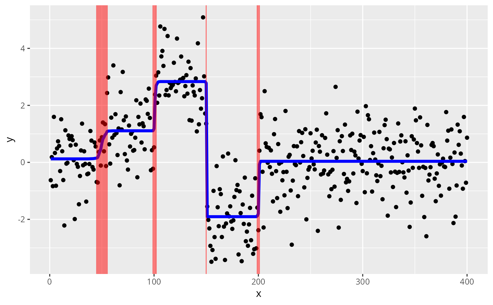
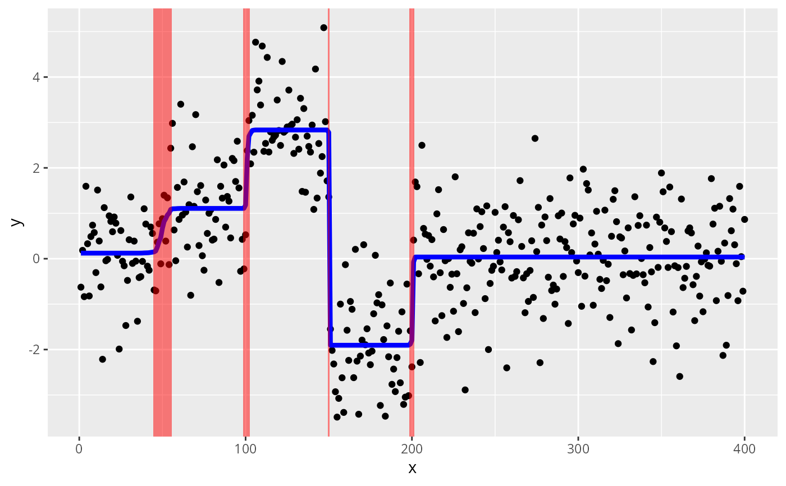

Apply susie to trend filtering (especially changepoint problems), a type of non-parametric regression.
Source:R/susie_trendfilter.R
susie_trendfilter.RdFits the non-parametric Gaussian regression model
\(y = mu + e\), where the mean \(mu\) is modelled as \(mu =
Xb\), X is a matrix with columns containing an appropriate basis,
and b is vector with a (sparse) SuSiE prior. In particular, when
order = 0, the jth column of X is a vector with the first j
elements equal to zero, and the remaining elements equal to 1, so
that \(b_j\) corresponds to the change in the mean of y between
indices j and j+1. For background on trend filtering, see
Tibshirani (2014). See also the "Trend filtering" vignette,
vignette("trend_filtering").
Arguments
- y
An n-vector of observations ordered in time or space (assumed to be equally spaced).
- order
An integer specifying the order of trend filtering. The default,
order = 0, corresponds to "changepoint" problems (i.e., piecewise constant \(mu\)). Althoughorder > 0is implemented, we do not recommend its use; in practice, we have found problems with convergence of the algorithm to poor local optima, producing unreliable inferences.- standardize
Logical indicating whether to standardize the X variables ("basis functions");
standardize = FALSEis recommended as these basis functions already have a natural scale.- use_mad
Logical indicating whether to use the "median absolute deviation" (MAD) method to the estimate residual variance. If
use_mad = TRUE, susie is run twice, first by fixing the residual variance to the MAD value, then a second time, initialized to the first fit, but with residual variance estimated the usual way (by maximizing the ELBO). We have found this strategy typically improves reliability of the results by reducing a tendency to converge to poor local optima of the ELBO.- ...
Other arguments passed to
susie.
Value
A "susie" fit; see susie for details.
Details
This implementation exploits the special structure of X,
which means that the matrix-vector product \(X^Ty\) is fast to
compute; in particular, the computation time is \(O(n)\) rather
than \(O(n^2)\) if X were formed explicitly. For
implementation details, see the "Implementation of SuSiE trend
filtering" vignette by running
vignette("trendfiltering_derivations").
References
R. J. Tibshirani (2014). Adaptive piecewise polynomial estimation via trend filtering. Annals of Statistics 42, 285-323.
Examples
set.seed(1)
mu = c(rep(0,50),rep(1,50),rep(3,50),rep(-2,50),rep(0,200))
y = mu + rnorm(400)
s = susie_trendfilter(y)
plot(y)
lines(mu,col = 1,lwd = 3)
lines(predict(s),col = 2,lwd = 2)
 # Calculate credible sets (indices of y that occur just before
# changepoints).
susie_get_cs(s)
#> $cs
#> $cs$L1
#> [1] 150
#>
#> $cs$L2
#> [1] 45 46 47 48 49 50 51 52 53 54 55
#>
#> $cs$L4
#> [1] 199 200 201
#>
#> $cs$L6
#> [1] 99 100 101 102
#>
#>
#> $coverage
#> [1] 0.9882895 0.9608400 0.9866788 0.9584016
#>
#> $requested_coverage
#> [1] 0.95
#>
# Plot with credible sets for changepoints.
susie_plot_changepoint(s,y)

# Calculate credible sets (indices of y that occur just before
# changepoints).
susie_get_cs(s)
#> $cs
#> $cs$L1
#> [1] 150
#>
#> $cs$L2
#> [1] 45 46 47 48 49 50 51 52 53 54 55
#>
#> $cs$L4
#> [1] 199 200 201
#>
#> $cs$L6
#> [1] 99 100 101 102
#>
#>
#> $coverage
#> [1] 0.9882895 0.9608400 0.9866788 0.9584016
#>
#> $requested_coverage
#> [1] 0.95
#>
# Plot with credible sets for changepoints.
susie_plot_changepoint(s,y)
